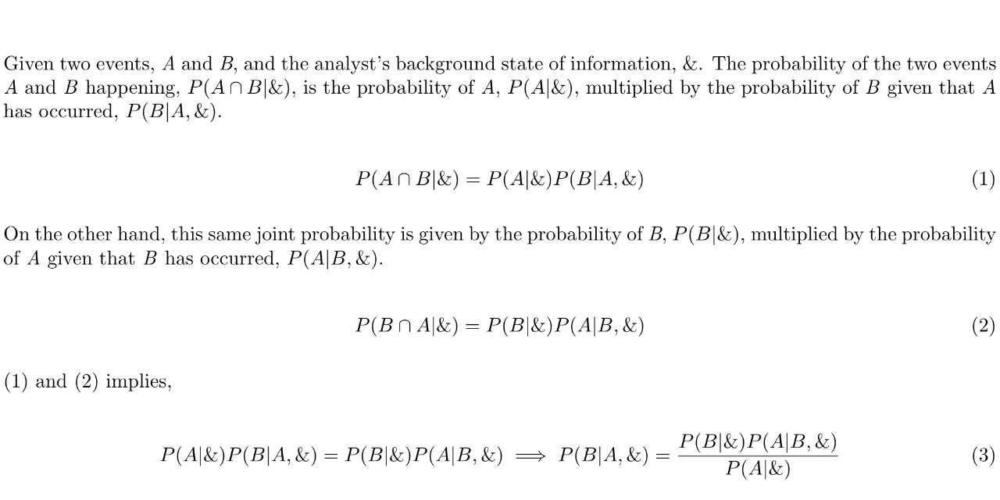

Live → Blog
February 16, 2020

I have known the Bayes' Theorem for a while now. But it was not until the past few weeks that I truly understood the genius of the Reverend Thomas Bayes. This seemingly simple equation is the heart of Bayesian Statistical Inference. It is part of what drives Machine Learning as a field. I have always understood that bit. But just this past few weeks it dawned on me what the Bayes' Theorem means for you and for me, non-machines. If we are not using it in our daily lives we should. In plain English, Bayes' Theorem says the probability of some uncertain phenomena of relevance to you given some evidence you have observed is proportional to the likelihood of seeing that evidence given the phenomena multiplied by your prior belief on the probability of the said phenomena. Okay, that was not plain English. If I were to describe this to my grandmother, I would tell her Bayes Theorem tells us that we can and should learn about our beliefs over uncertain events from the evidence we observe. If you understand the philosophy of a growth mindset (as opposed to a fixed mindset), you are one step closer to understanding how profound this result is. It is for this reason, that I have decided to update the statement and focus of my life's purpose. I have found the light. The statement of my life purpose has updated from:
"Helping enable the creation and sharing of collective value within my communities"
and it is now:
"Supporting rational and intelligent decision-making within high-impact businesses institutions."
If you look into the two statements, you notice they are not different from one another. I still want to help enable the creation and sharing of collective value, but I want to do it by supporting rational and intelligent decision-making. I am reminded now of Steve Jobs' quote about connecting the dots looking backwards. It feels like the dots have connected. Bayes' Theorem pretty much sums up what I study in my Masters Degree at Stanford. This simple looking equation is anything but simple. It is for this reason, that I want to dedicate the rest of my life to helping people and organizations make evidence-based and logical decisions. Let us begin to unpack this statement. The verb support implies that I do not want to be the decision-maker. My role is to serve as an analyst, an advisor, and a consultant. This means I am very less likely to fulfill my destiny as the 7th or 8th President of the Republic of Botswana. But my doors shall remain permanently open to the leadership of that great republic, if they should ever require my expertise and knowledge. In choosing to gain depth in Decision and Risk Analysis, I accept with pleasure the responsibility to maintain enough breadth of knowledge in all fields because who knows what kinds of problems my clients will throw at me? This is one of the places where the dots are connecting: curiosity is one of my 5 core values. What can beat work that requires one to learn about everything from organic farming methods to aircraft design, and everything in between?
The Oxford Dictionary defines rational as: "based on or in accordance with reason or logic." They go on to define intelligent as: "(of a device, machine, or building) able to vary its state or action in response to varying situations, varying requirements, and past experience." This is the application of Bayes' Theorem. This means I want to support entities to use logical frameworks and data available to allocate resources such that they optimize for some objective value they care about. I hope my anti-capitalism friends do not judge me too harshly, but I want to focus my purpose on for-profit organizations that deliver significant impact to their primary stakeholders. I define primary stakeholders to be customers, shareholders, employees, and communities from which these organizations operate. Based on my experiences working with and for non-profit organizations in Botswana, Costa Rica, Sri Lanka, and California, I am convinced non-profits are generally an inefficient form of value delivery. (Of course there are a few corner cases where the non-profit model makes sense, and I would be happy to support such organizations if necessary). One might wonder what I mean by impact and how I plan to measure it. These are important questions, and I think I will continue to iteratively reflect on how to best answer them. For now, let us assume impact is some positive benefit and is desirable. As I am on the job market, this is a really important piece in choosing the company I will join. I am measuring impact based on the primary product(s)/service(s) of the firm, as well as the ethos inferred from the organizational culture of the firm.
As I wrap up my formal education journey, my heart is filled with gratitude that I have found my niche. The classes are still difficult, but there is a certain joy found in struggling with something you find breathtakingly beautiful. Bayes' Theorem takes my breath away. I am grateful to the Reverend Thomas Bayes for laying down the theoretical foundations for this religion, Decision Analysis/Risk Analysis, that I am choosing to evangelize. It is as though a light bulb has been turned on. Now I actually believe I can make a difference in the world, as has many evangelists before myself.
← Return to Blog